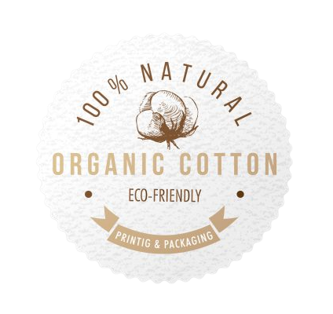
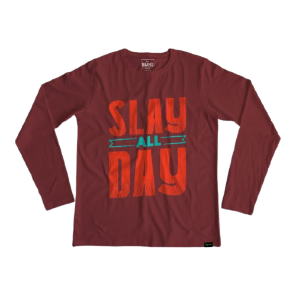
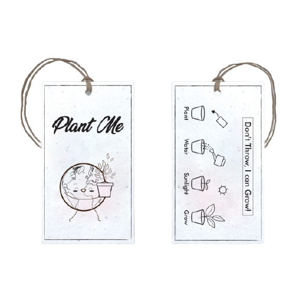
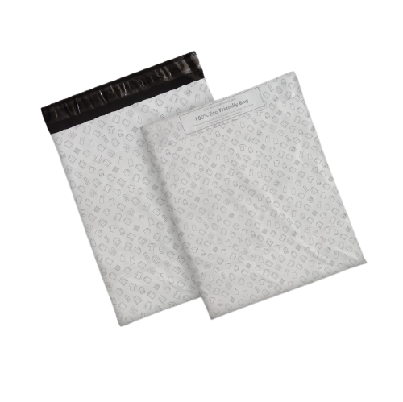

100% Organic Cotton
Organic Cotton that is Biowashed and Preshunk before reaching you.
Comfy Wear
The Perfect Fabric being Lightweight and Breathable
The Perfect Print
Quality Print with Eco-friendly DTG printing that's not harmful to Nature.


Tagged with Seeds
Not to the bin anymore! One thought goes a long way in preserving our Planet. You can plant the tags for a more greener and sustainable future.
Compostable Bags
Opting for an Eco friendly Product with Complete Biodegradle Packaging.
